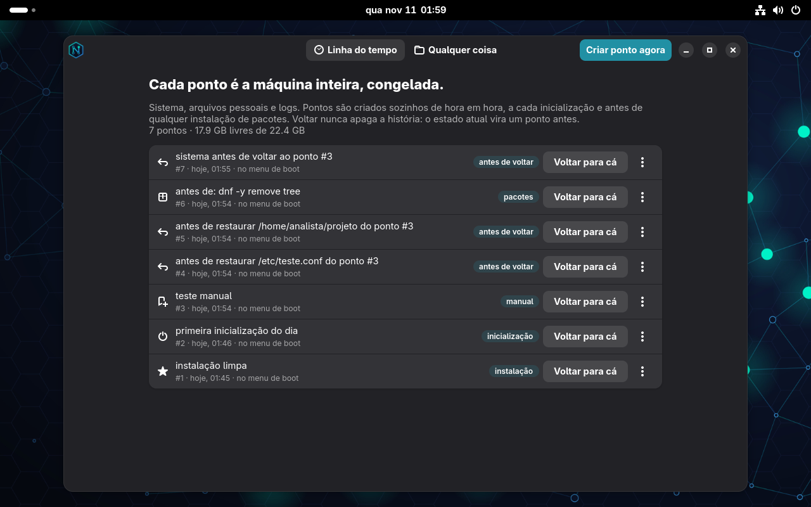
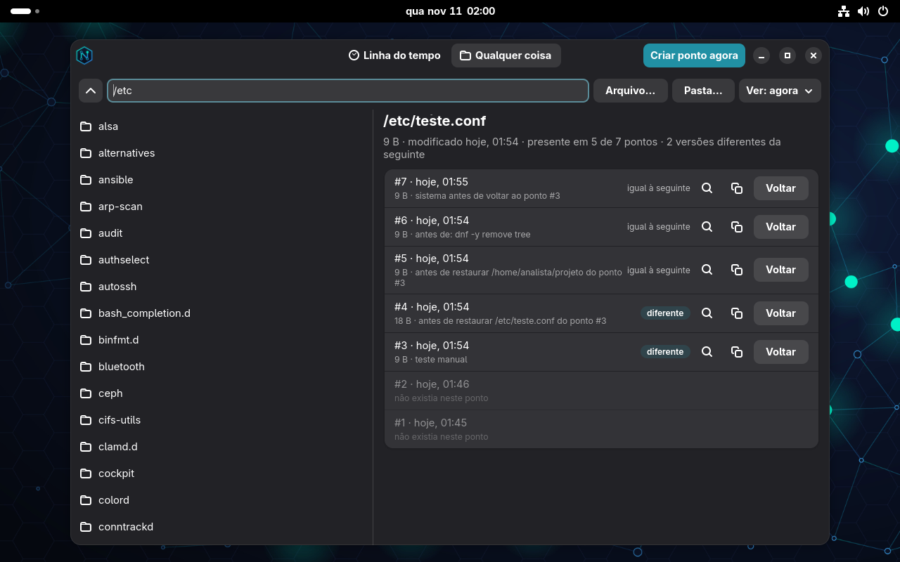
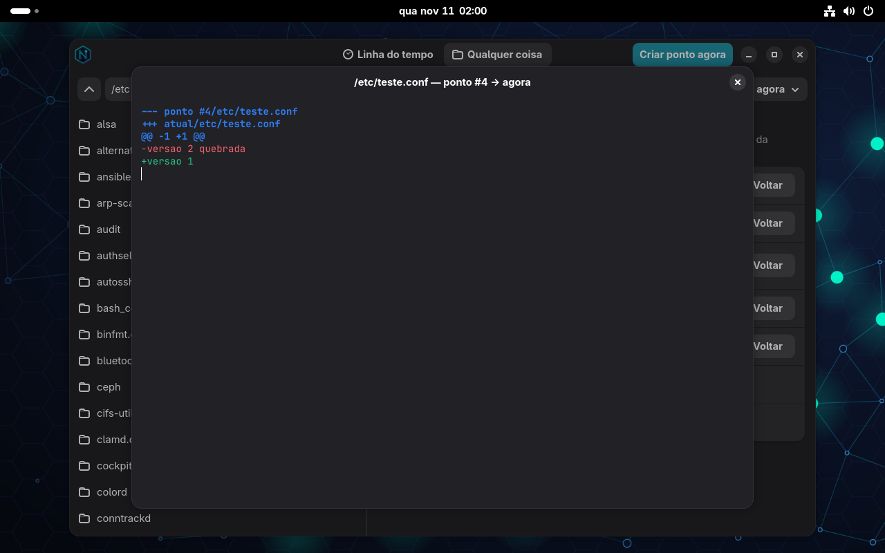
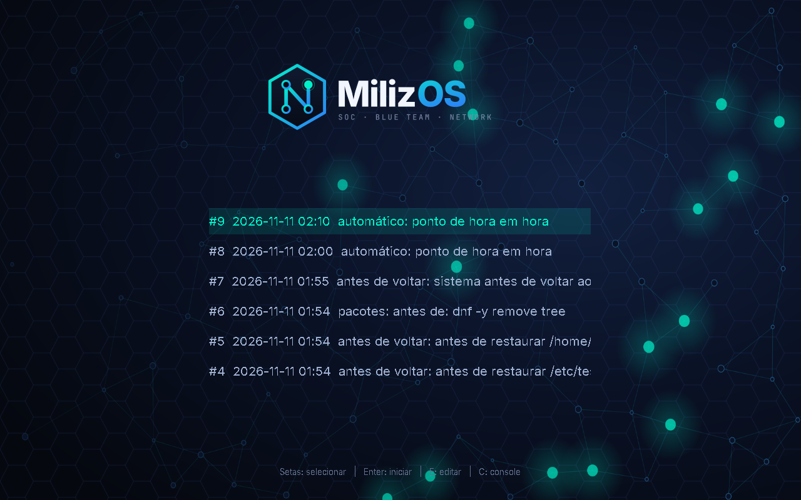
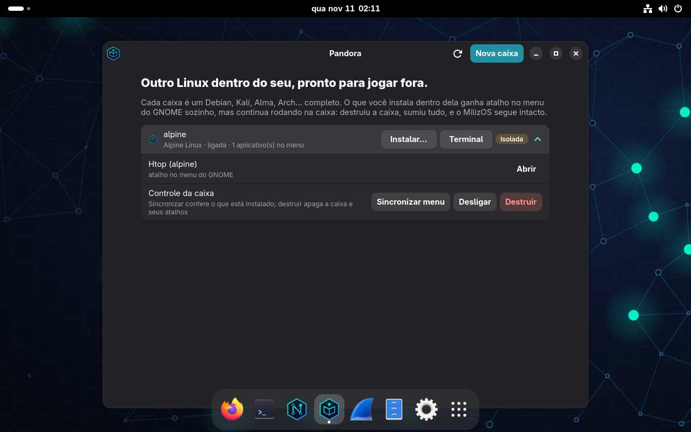
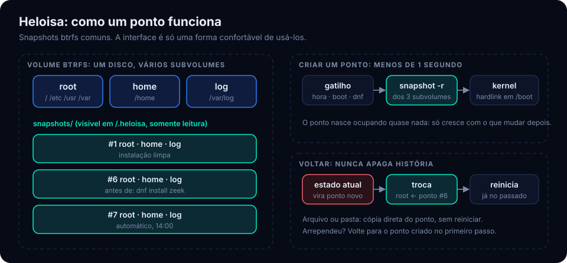
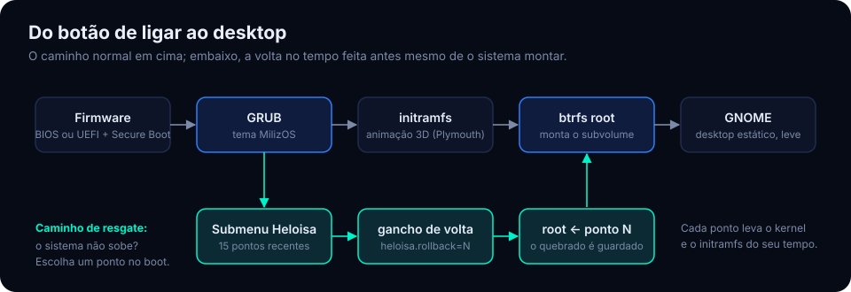
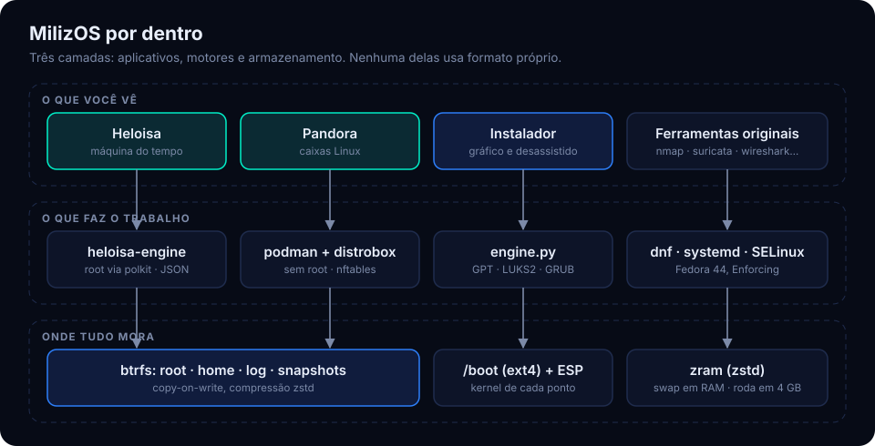
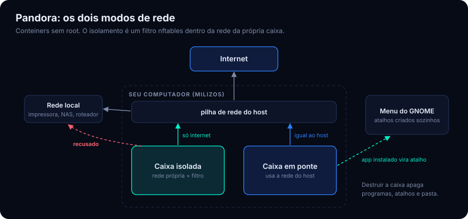

O MilizOS é um Linux totalmente gravável em que a máquina inteira tem histórico: sistema, arquivos pessoais e logs. Instalou, editou, apagou, quebrou? Volte um arquivo, uma pasta ou o sistema todo a qualquer ponto. E voltar também vira história.
Base Fedora 44 · para SOC, Blue Team e redes · roda em 4 GB de RAM
A máquina agora
Você não precisa saber git para usar. Mas, se sabe, já entendeu o MilizOS: cada momento da máquina é um ponto, e um ponto é para o computador o que um commit é para o código.
git commitpontoSistema, /home e logs congelados no mesmo instante, com o kernel daquele momento.hook de pre-commitpontos automáticosUm ponto nasce sozinho antes de cada dnf, de hora em hora e na primeira inicialização do dia.git loglinha do tempoA lista de todos os pontos, com o motivo de cada um e o que mudou desde então.git diffcomparar versõesDiff colorido de qualquer arquivo contra qualquer ponto; pacotes que entraram, saíram ou mudaram.git checkout -- arquivovoltar um caminhoUm arquivo ou uma pasta volta exatamente como era. Inclusive o que foi apagado.git revertvoltar a máquinaO estado atual vira um ponto antes de qualquer volta. A história só cresce, nunca é reescrita..git//.heloisaOs pontos ficam montados somente leitura, legíveis com ls, diff e cp.É uma comparação, não um git de verdade: não há ramos nem merge. Por baixo são snapshots btrfs, e o aplicativo que cuida deles se chama Heloisa.
Os pontos nascem sozinhos nos momentos em que as coisas costumam dar errado. Cada tipo tem a sua regra de retenção, e os manuais nunca expiram.
| Quando | Tipo | Quantos ficam |
|---|---|---|
| Fim da instalação | instalação | para sempre |
Antes de cada transação do dnf | pacotes | os 12 mais recentes |
| De hora em hora | automático | todos por 24 h, depois um por dia por 14 dias |
| Primeira inicialização do dia | inicialização | os 5 mais recentes |
| Antes de qualquer volta | antes de voltar | os 12 mais recentes |
| Botão Criar ponto agora | manual | para sempre |
Um ponto não copia arquivos: o btrfs só segura os blocos daquele instante. 500 GB de arquivos parados custam zero por ponto, e com menos de 15% de disco livre os automáticos mais antigos saem sozinhos.
Quanto pior a situação, mais cedo no boot a volta acontece. Em todos os casos o estado quebrado fica guardado como um ponto, para análise.
Veja todas as versões que um arquivo ou pasta já teve, compare e traga de volta no lugar ou como cópia ao lado.
Escolha o que volta: sistema, arquivos pessoais, logs ou qualquer combinação. A troca vale ao reiniciar.
O GRUB lista os 15 pontos mais recentes. A volta acontece antes de a raiz ser montada, com o kernel daquele ponto.
Inicie pelo pendrive: a Heloisa acha os pontos no disco, restaura o sistema e reconstrói /boot e o GRUB.
O que já foi e o que ainda não foi testado em cada caminho está nos problemas conhecidos. O resgate pela mídia, por exemplo, ainda não foi repetido na 2.0.
Capturas reais do sistema instalado. Uma senha de administrador por sessão, e a janela nunca roda como root.

Cada linha é a máquina inteira congelada. O menu de cada ponto mostra o que mudou desde então e deixa explorar os arquivos como eram.

A aba Qualquer coisa navega por todo o sistema de arquivos e lista as versões de um caminho. O seletor Ver: mostra as pastas como eram em um ponto, e é assim que se acha o que foi apagado.

Antes de voltar, compare. O diff mostra exatamente o que muda se você trouxer aquela versão.

O submenu Heloisa: voltar o sistema no tempo do GRUB. Escolher um ponto inicia o sistema daquele momento; o que estava quebrado vira um ponto novo.
Cada ponto é um snapshot btrfs comum, montado somente leitura em /.heloisa. Se o aplicativo sumir amanhã, as ferramentas de sempre continuam lendo tudo.
dnf, /etc, /usr. Nada é somente leitura, nada é imutável.$ ls /.heloisa 1 2 3 7 8 12 13 $ cat /.heloisa/12/info.json {"id": 12, "time": "2026-11-11 14:02:10", "kind": "dnf", "desc": "antes de: dnf install zeek"} $ diff -u /.heloisa/12/root/etc/fstab /etc/fstab $ sudo cp -a /.heloisa/7/home/ana/relatorio.odt ~/

Debian, Kali, AlmaLinux, Ubuntu, Fedora, Arch, Rocky, openSUSE, Alpine ou Parrot dentro do MilizOS, sem root. O sistema base não é tocado.
Quatro pacotes próprios sobre um Fedora 44. Escolha um tema.

O btrfs é copy-on-write: o ponto não copia arquivos, só segura os blocos daquele instante. Separar home e log de root é o que permite voltar o sistema sem perder documentos nem o registro do que aconteceu.

A volta pelo menu de boot acontece antes de o sistema montar a raiz, com o kernel daquele ponto. O sistema que estava quebrado é guardado como um ponto novo.

A Heloisa e a Pandora são interfaces para ferramentas que já existem; se elas sumirem, o que criaram continua legível.

O isolamento é um conjunto de regras nftables aplicado dentro da rede da própria caixa toda vez que ela liga: endereços privados são recusados, o resto passa.
dnf do projetomilizos-update.timer atualiza, e a Heloisa cria um ponto antesUma correção publicada chega às máquinas em até 24 horas. Como passa pelo dnf, toda atualização tem volta. Só os pacotes do MilizOS se atualizam sozinhos; os do Fedora seguem sob o seu controle.
Organizadas por função no menu do GNOME, cada uma com o seu próprio nome e manual. Três perfis na instalação: SOC, Redes e Sensor (Suricata sem interface gráfica, pronto para rack).
Só entra na ISO o que existe nos repositórios do Fedora. O que falta, como Metasploit e Burp Suite, roda em uma caixa Kali da Pandora.
A 1.0 "Sentinel" era um conjunto de comandos de terminal em volta do nos. A 2.0 "Heloisa" troca isso por uma ideia só: a máquina inteira tem histórico, e tudo se faz por dois aplicativos gráficos e pelas ferramentas originais.
| 1.0 "Sentinel" | 2.0 "Heloisa" | |
|---|---|---|
| O que entra em um ponto | Só o sistema. /home tinha snapshots separados; logs não voltavam. | A máquina inteira no mesmo instante: sistema, /home e logs. |
| Pontos automáticos | Antes de cada dnf (10 mantidos); /home de hora em hora. | Antes de cada dnf (12), de hora em hora, a cada primeira inicialização do dia e antes de toda volta. |
| Voltar um arquivo ou pasta | Só de /home, por comando. | De qualquer lugar do sistema, com lista de versões, diff e cópia ao lado. |
| Como se usa | Comando nos checkpoint e nos data. | Aplicativo gráfico Heloisa. Nenhum comando próprio. |
| Menu de boot | Submenu de checkpoints. | Submenu Heloisa com os 15 pontos mais recentes. |
| Outras distribuições | nos box: 5 distribuições, sempre na rede e na pasta do host. | Aplicativo Pandora: 10 distribuições, modo isolado ou em ponte, atalhos automáticos no menu. |
| Atualização do MilizOS | Não havia. | Automática e diária, pelo repositório dnf do projeto, com ponto antes. |
| Memória | 4 GB no mínimo, 8 GB recomendados. | 4 GB bastam: swap comprimido em RAM (zram). |
| Desktop | Fundo animado, que chegava a quase 400% de CPU sem aceleração 3D. | Papel de parede estático. A animação 3D ficou só na tela de boot. |
| Tamanho da ISO | 2,9 GB | 3,3 GB |
/.heloisa, somente leitura.nos e todos os subcomandos.nos incident), captura em anel e triagem.nos drill).nos attest).nos forge). A instalação desassistida por autoinstall.json continua.nos tools: as ferramentas seguem no menu, por categoria.Máquina do tempo, caixas Linux e atualização automática. Ver a release · Histórico completo
Primeira versão pública: instalador próprio, checkpoints do sistema, comando nos e três perfis. Ver a release
Requisitos: x86-64, 4 GB de RAM, 30 GB de disco. Testado em máquina virtual; ainda não em hardware real.
SHA-256 da ISO
6167e3bb68b31acc3f87057381b345b5118b0e5c1fd1830f111ee3b28c8bb14a
curl -fL --remote-name-all "https://github.com/Daniel-Pereira-Linux/milizos/releases/download/v2.0/MilizOS-2.0-x86_64.iso.part-0[0-1]" "https://github.com/Daniel-Pereira-Linux/milizos/releases/download/v2.0/MilizOS-2.0-x86_64.iso.sha256" \ && cat MilizOS-2.0-x86_64.iso.part-* > MilizOS-2.0-x86_64.iso \ && sha256sum -c MilizOS-2.0-x86_64.iso.sha256 && rm MilizOS-2.0-x86_64.iso.part-*
sudo dd if=MilizOS-2.0-x86_64.iso of=/dev/sdX \
bs=4M status=progress oflag=syncqemu-system-x86_64 -enable-kvm -m 4G -smp 4 \
-cdrom MilizOS-2.0-x86_64.isoCom capturas reais, diagramas e os limites de cada recurso.
O MilizOS é feito por uma pessoa só, no tempo livre, e é gratuito. Se ele te economizou uma noite de trabalho, um café ajuda a próxima versão a sair.
danielmaraboo@gmail.comPix, chave do tipo e-mail. Qualquer valor. Obrigado.